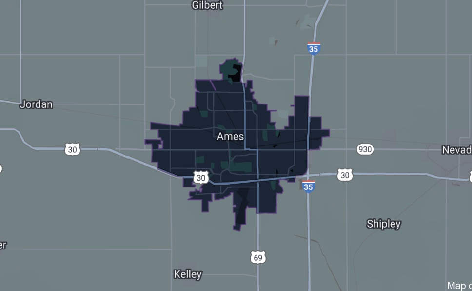

Frank Novak
Data Scientist
Projects
NIJ Recidivism Forecasting Group Project
Phasellus enim sapien, blandit ullamcorper elementum eu, condimentum eu elit. Vestibulum ante ipsum primis in faucibus orci luctus et ultrices posuere cubilia luctus elit eget interdum.
Reddit API and NLP Analysis
Phasellus enim sapien, blandit ullamcorper elementum eu, condimentum eu elit. Vestibulum ante ipsum primis in faucibus orci luctus et ultrices posuere cubilia luctus elit eget interdum.
Ames Housing Datas
 Phasellus enim sapien, blandit ullamcorper elementum eu, condimentum eu elit. Vestibulum ante ipsum primis in faucibus orci luctus et ultrices posuere cubilia luctus elit eget interdum.
Skills
Programming Language, Software, & Databases
Python - NumPy, Pandas, scikit-learn, Statsmodels, Keras, PySpark, Tensorflow, Git, SQL, Databricks , AWS, Streamlit
Statistical Methods & Modeling
Linear & Logistic Regression Feature Engineering, Natural Language Processing, Time Series , Clustering , Neural Networks, Grid Searching & Pipelines, KNN, Decision Trees, Random Forests
Programming Language, Software, & Databases
Python - NumPy, Pandas, scikit-learn, Statsmodels, Keras, PySpark, Tensorflow, Git, SQL, Databricks , AWS, Streamlit